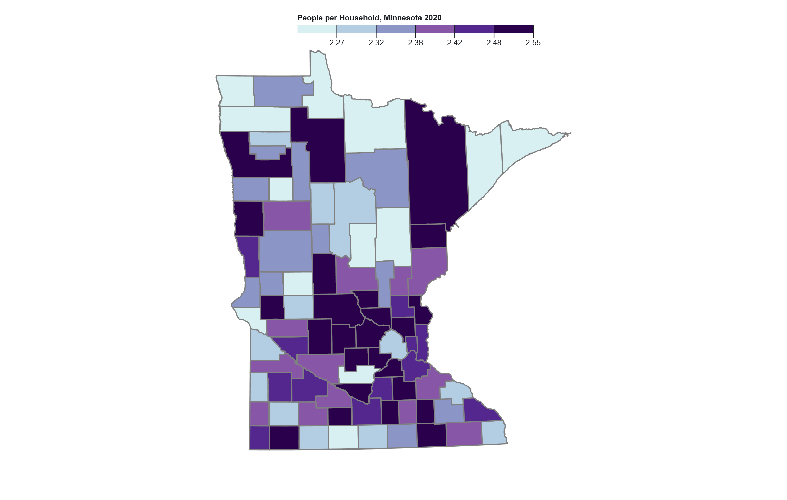
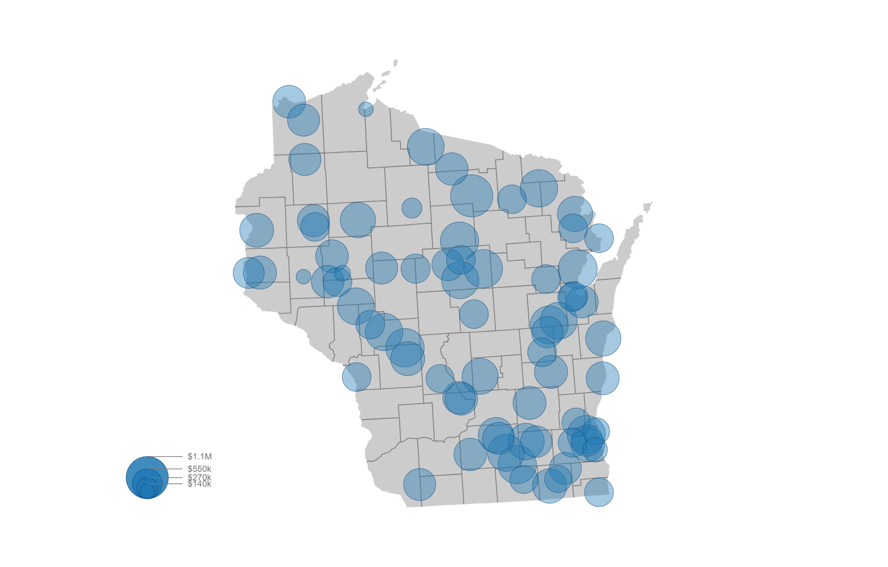
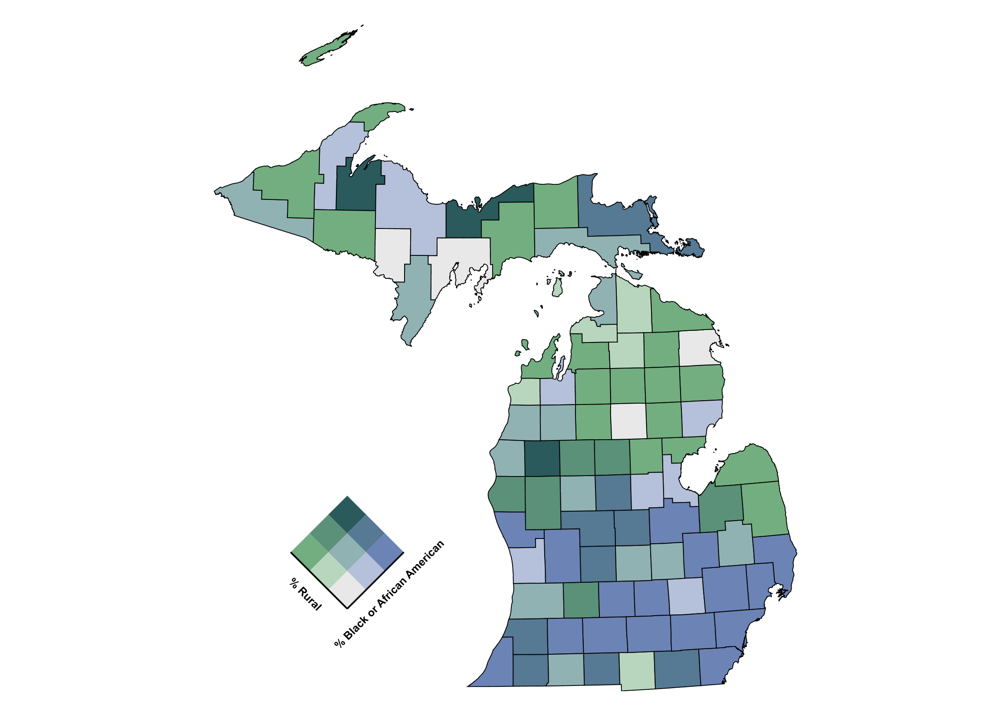
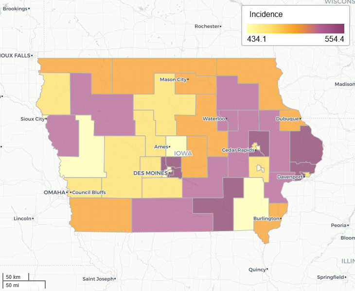

Geovisualization Portfolio SEES 3540

Population Per Household in Minnesota Counties
Spatial Distribution of Values: Based on my map output, there appears to be larger household sizes in the west-central portion of Minnesota, whereas counties in the north-west and south central parts of the state appear to have smaller household sizes. Even though the majority of counties have very close numbers, even the smallest variation in population per household is enough to help identify regional trends in average household size.

Public Electric Vehicle Charging Stations in Wisconsin by Total Cost
Spatial Distribution: One spatial distribution that I notice is that there is a large clumping of points in the south east portion of the state. This is most likely due to the fact that that is where Milwaukee is located, which is the most populated city in the state. Because of this is would make sense that there would be a higher concentration of public electric vehicle chargers due to the higher demand. Another spatial distribution that I notice is the line of charging stations that move from the middle west of the state to the south west.

Distribution of Rural and Black/African American Populations in Michigan
Starting by looking at the spatial distribution of the variable % Rural, we can see that the areas that have the highest levels of green mostly appear in the northern part of the Mitten (the nickname for lower half of Michigan), and throughout the upper peninsula. This is likely due to a lower population, where there are less cities, making more of the land being considered rural.

Domestic Migration in Mexico
For my flow data, I kept the original symbology of the curved half arrow, as I think it looks the most visually appealing, as well as less confusing with the amount of flows I have going on in my flow map, making the tapered or teardrop option a bit hard to identify the direction of the flow. The thickness of the lines is indicative of the amount of migration volume between states in the direction that the arrows are pointing to.

Water Pollution and Cancer in Iowa
Project Proposal: In recent years, the state of Iowa has seen an alarming rise in cander rates, having one of the highest rates of cancer in the United States. It also has a major water quality crisis that goes back decades. The primary culprit behind this growing problem in Iowa's massive agriculture and livestock industry. This indistry employs a fifth of Iowa's workers and accounts for almost a third of the state's economy. However, its ecological impact on Iowa's people cannot be ignored. Iowa farmers are heavily reliant on organic fertilizer, which contains countless dangerous chemicals.